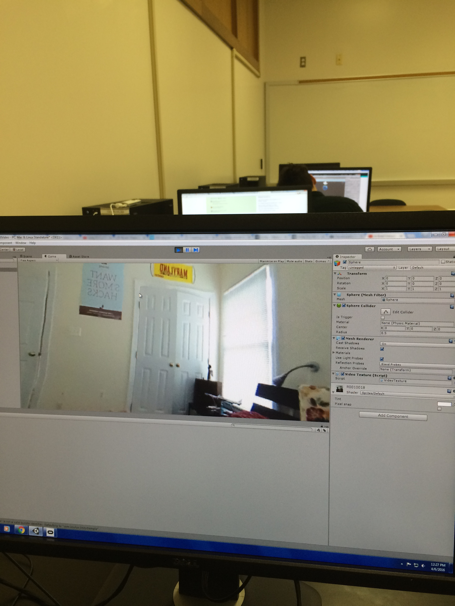
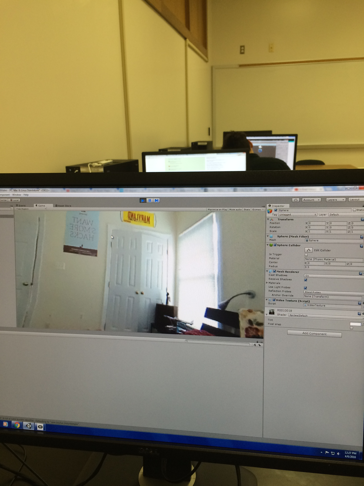
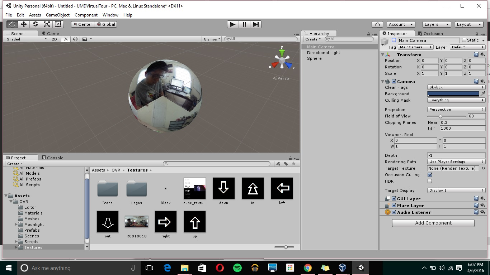
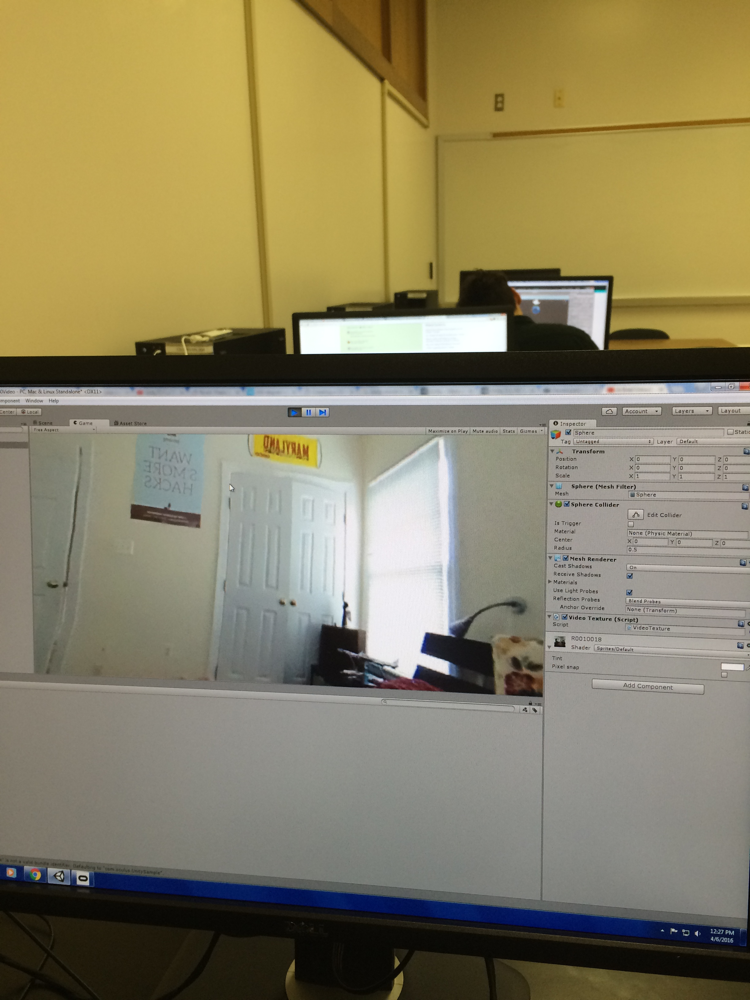
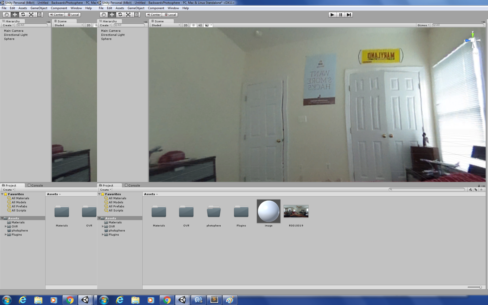
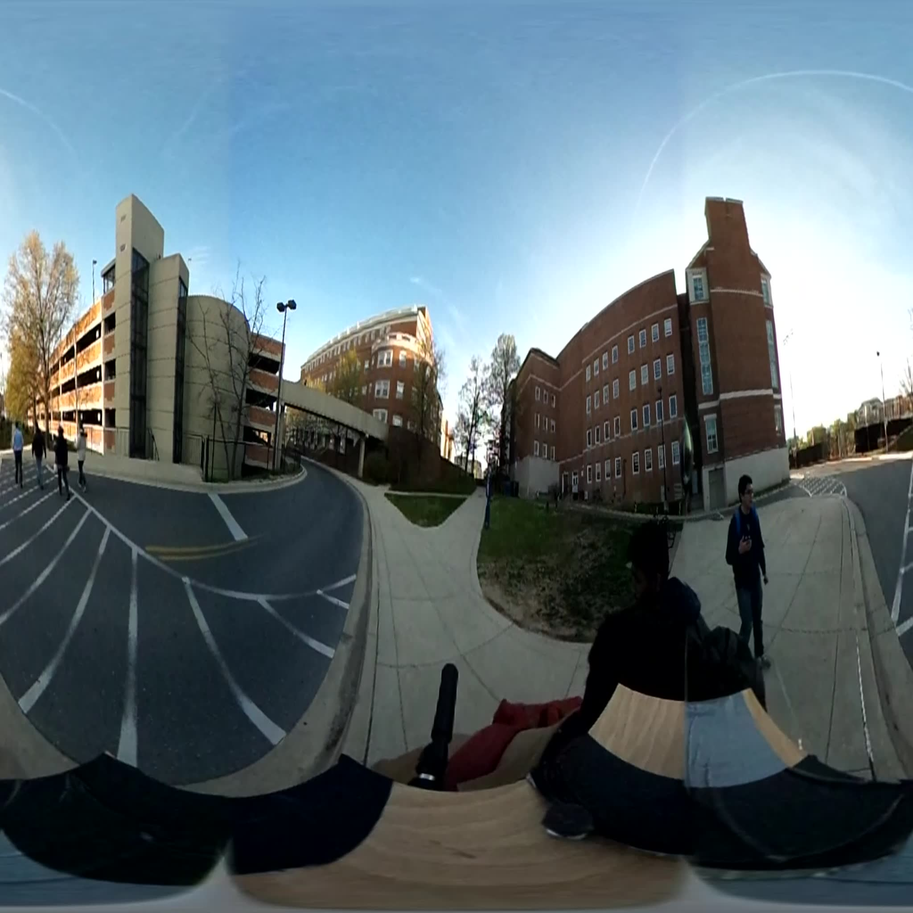
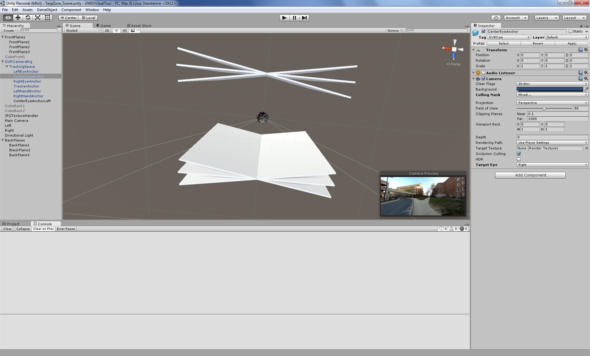
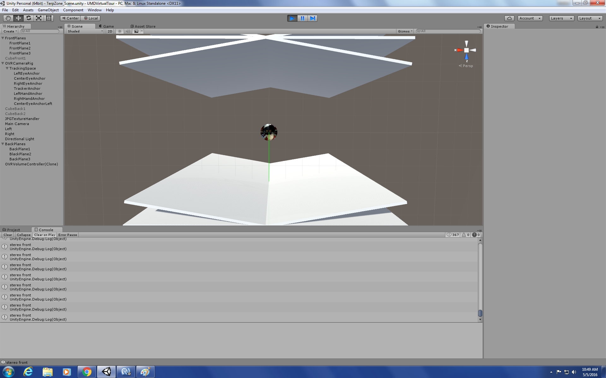

Proof of Concept: For the proof of concept, we were able to import the 360 Rioch Theta camera images into Unity by creating a sphere gameobject, inverting the normals on the sphere, wrapping the texture on the sphere, and finally centering the main camera at the center of the sphere.
As a result, we were able to create a 360 immersive experience. The picture below demonstrates our findings:


Since videos is comprised of a bunch still images changed at a certain fps, to mimic a video the texture of the sphere has to be updated at a certain fps. To accomplish this goal, the team will use E-Z Movie Texture tool found in the Unity Asset Store.
The next step in the project is to begin filming the walking tour. We will use two Ricoh Theta cameras and place them next to one another with a small gap about the same width apart as the eyes. We will place the cameras on a mobile stand and film the virtual tour. Using the two 360 cameras we will be able to get a stereoscopic view of the world. In Unity we will assign each camera to the OVR cameras for the left and right eyes. Using the techniques from the first checkpoint and E-Z Movie Texture tool we will try and get a full stereoscopic 360 view in virtual reality.
To create a stereoscopic view, each eye should be shown different image of the scene. For this we have set up a stand with 2 Ricoh theta 360 cameras mounted and filmed 360o videos of the campus.
First we extracted frames from the videos. One frame from the left camera and the other corresponding frame from the right camera are applied as texture on two spheres. The spheres are assigned two different “layers” in Unity - one for the “LeftEye” and other for the “RightEye” respectively. We used the OVR camera plugin and have 2 copies of it in the virtual scene placed in Unity where one camera has its “culling mask” associate with “LeftEye” layer and the other associated with “RightEye” layer (“culling mask” and “layer” are the gameobject parameters provided in Unity). With one image being rendered onto the left eye and a different image onto right eye, theoretically stereo should be obtained.
The setup has the 2 cameras slightly misaligned and hence the frames extracted from the videos are to be aligned first. Currently we are working on the image alignment and experimenting the stereo vision of the 360 images on by one.
Once stereo is fixed for individual image, we plan to change the frames/ images shown on each eye as the player moves around using keyboard keys or a joystick (providing a walking experience). A skeleton script which does this is already done. The main challenge lies in realigning the images to provide immersive and seamless stereo.
Our final product is a unity application that renders a stereoscopic video tour of parts of the University of Maryland campus.
Photosphere: “A photosphere is a single, non-stereoscopic spherical panorama image.” Key property: Photospheres use Mercator projection. (Put lines of longitude and latitude on the image , they will form a gird where every cell is the same size).
We created a sphere surrounding the OVR Camera Rig. Unity spheres primitive use equirectangular mapping (Mercator projection), which is perfect for wrapping our images. The only problem is that the sphere has its outside showing. To solve this problem, we used a custom shader. This custom shader “culls” or ignores the front faces and as a result renders the image on the back faces, like an inside out sphere. Additionally, our custom shader replaced the horizontal texture coordinate X with 1 - X. So now the horizontal texture ranges from one to zero. This is necessary to prevent the mono image inside the photosphere from looking backwards.
Why we cannot create full 360 stereoscopic using only two cameras: http://elevr.com/elevrant-panoramic-twist
Our image data example frame
To get stereo we need a second sphere. The left eye frame will be on one sphere, and the right eye image will be on the other. By default, both left and right cameras on the OVR Camera Rig show both spheres. We needed to use layers and the culling mask feature so that each camera only sees only one sphere.
Using only two cameras makes it difficult to achieve stereoscopic video for the full 360 degrees sphere. We decided instead to leave the sides of the sphere as mono and keep front and back stereo. In order to achieve stereo in the front and back, the left and right camera footage is shown accordingly to the left and right eye when the user is facing forward or looking at the front panel. When the user turns around and or faces the back panel the footage captured with right camera is now shown in the left eye and the footage captured with the left camera is now shown in the right eye. In order to implement this functionality we inserted 3 panels in the front and back of the viewer. The panels are setup to detect the current field of view.
The gaps between the front field of view and back field of view make up the side views and are mono. In order to keep track of where the user is looking we used unity’s physics raycasting. We attached the raycast to the camera and tracked where the raycast was looking. The raycast is able to detect the panels using RayCastHit and finding the tag of the GameObject that was hit.
That’s it! Then we just used a script that updated the frame in each sphere at 30 fps to get video like sensation.